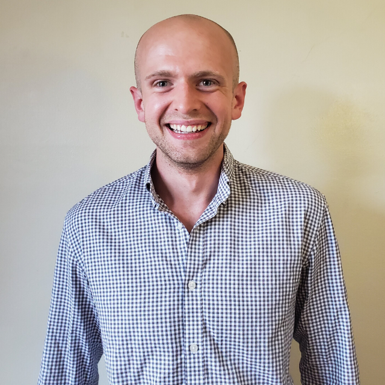

<div class="main-content" style="max-width: 800px;">
  <div class="outer-center">
    <div>
  <p>
    
    Originally from Indianapolis,
    I graduated from the University of Chicago in 2020 with a B.S.
    in Statistics, a B.A. in Economics,
    and a hefty amount of math.
    I am currently working as a pre-doctoral fellow at <a href="https://opportunityinsights.org/">Opportunity Insights</a>,
    where I am doing my part to identify barriers to economic opportunity.
  </p>
  <p>
    I am fascinated by the extremes of the human condition, and this
    burning fascination is what drives me. It pushes me to my personal
    limits through <a href="#/endurance">endurance sports</a>. I travel the world to meet its
    people and learn about the various peaks and valleys of the human
    experience. Most of all, I am driven to uncover the
    out-of-sight injustices that inhibit the economic well-being
    and dignity of all peoples.
  </p>
  </div>
  </div>
</div>
